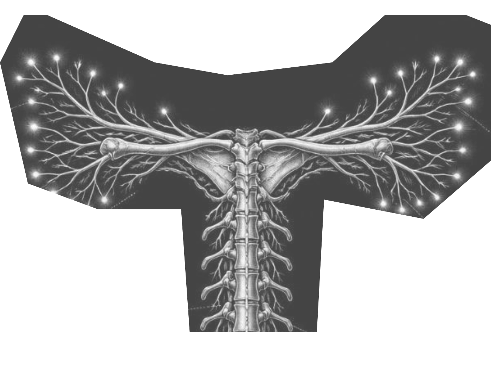
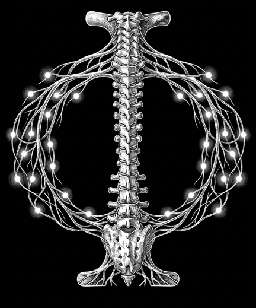
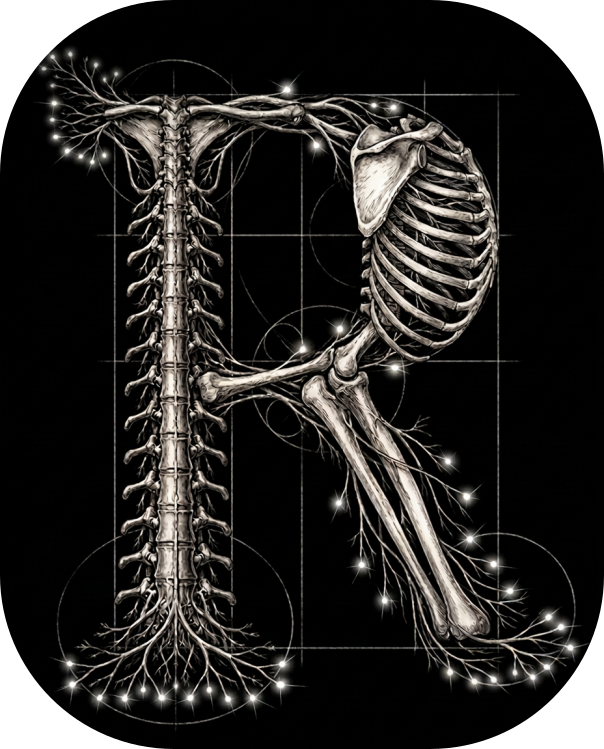
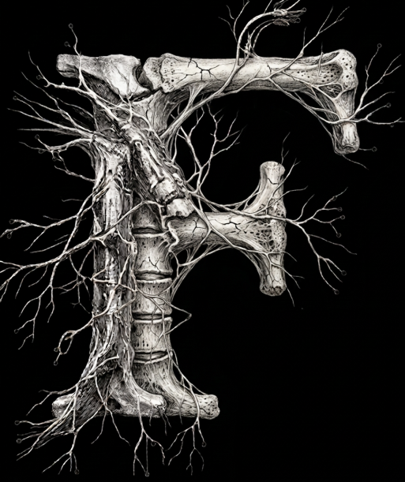

РИС I
ШРИФТ
ШРИФТ
Parmigiano
Piccolo Pro

Анатомия шрифта
Шрифт Parmigiano Piccolo Pro напоминает модели Scotch Roman начала XIX века. У него массивные засечки, сниженный контраст штрихов, укороченные восходящие и нисходящие элементы, а пропорции букв довольно узкие.
Засечка

Восходящая
Нисходящая
РИС IIАНАТОМИЯ
Мышцы
Мышцы, пропорции и детали шрифта взаимодействуют как единый организм, создавая баланс контрастов, ритма и формы
АБГДЕЁЖЗИКЛМНОПР
СТУФЦЧШЩЪЫЬЭЮЯ

Кости
Кости формируют контраст тела, так контраст толстых и тонких штрихов создает основу буквы
капля
верхняя дуга
основной штрих
внутренний просвет
засечка
волосной штрих
КОСТИ

РИС IIIКОСТИ
Ось буквы определяет направление ее основных штрихов
H
Отсутствие наклона
A
Умеренный наклон
S
Отсутствие наклона
Нервы
ось и направление
конструкция и связь
 РИС IV
РИС IV
НЕРВЫ

НЕРВЫ
Съешь же еще этих мягких
французских булок, да
выпей чаю
A
light
A
Regular
A
Medium
A
Bold
A
Blak
A
Italik
A
Regular
italik
A
Bold
italik